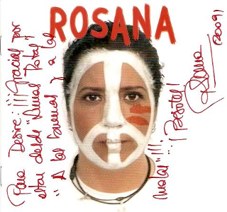
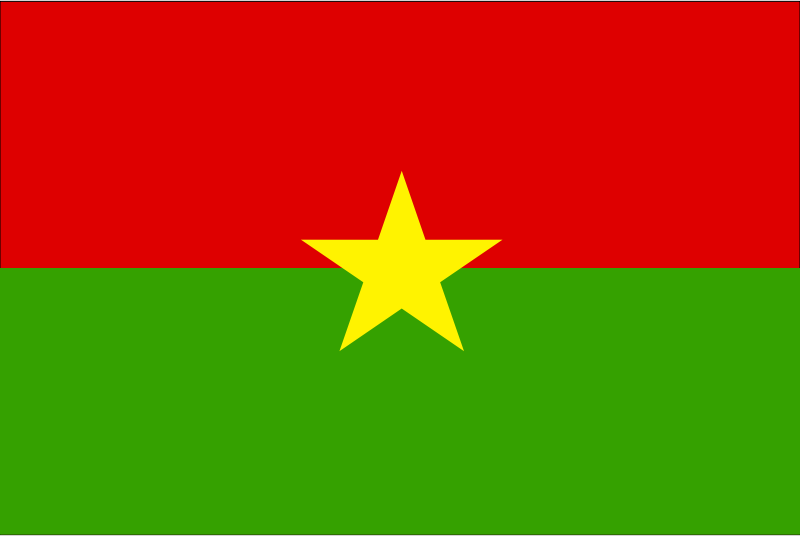
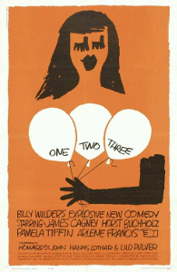

Rosana aus Spanien
 Rosana: A fuego lento
Rosana: A fuego lento
Album: Lunas rotas
Rosana ist eine bekannte spanische Sängerin, die auf den kanarischen Inseln geboren und aufgewachsen ist. Nachdem Sie nach Madrid zog, gelang es ihr dort Mitte der 90er Jahre einen Plattenvertrag abzuschließen. Der Song „A fuego lento“ (übersetzt: „auf kleiner Flamme“) stammt von ihrem hochgelobten Debütalbum „Lunas rotas“.

Bildquelle: Flickr
Giorgos Dalaras aus Griechenland
Giorgos Dalaras:
Pame Gi' Allou
Album: Kalos Tous
Giorgos Dalaras ist ein engagierter Künstler mit zum Teil sehr ernsten Texten. In seiner Musik verbindet er Rembetiko (ein griechischer Musikstil, der aus der Verbindung der Volksmusik Griechenlands und der osmanischen Musiktradition hervorgegangen ist) und Latin-Elemente. „Pame Gi´Allou“ heißt: Lass´ uns woanders hingehen!
Cheikh Lo aus Burkina Faso
Cheikh Lo:
M'beddemi
Album: Bambay Gueej
Cheikh Lo ist in Burkina Faso geboren und aufgewachsen, lebte später im Senegal und in Frankreich. Der Musiker mischt kubanische Rhytmen mit afrikanischen Sounds. Sein Debütalbum wurde von Youssou N´Dour produziert, ein Künstler über den du im Audioplayer Dance mehr erfahren kannst.
Bildquelle: Wikimedia
Lyapis Trubetskoy aus Weißrussland
Lyapis Trubetskoy:
Yabloni
Album: Kpacota
Lyapis Trubetskoy gilt als eine der bekanntesten Rock-Bands aus Weißrussland. Da die weißrussische Regierung sie als regimekritisch ansah, hat die Band in Weißrussland Auftrittsverbot erhalten. Lyapis Trubetskoy machten jedoch weiter Musik und traten in Städten rund um Weißrussland auf.
Paban Baul & Sam Mills aus Indien/England
 Paban Baul & Sam Mills:
Paban Baul & Sam Mills:
Dil Ki Doya Hoy Na
Album: Real Sugar
Paban Baul und Sam Mill bilden eine eindrucksvolle indisch-englische Koproduktion. In Indien schafften es die Künstler in die Charts. Das Album „Real Sugar“ wurde von Peter Gabriel veröffentlicht. „Dil Ki Doya Hay Na” heißt soviel wie: Hast du ein gnädiges Herz?
Raz Dwa Trzy aus Polen
Raz Dwa Trzy:
Czarna Inez
Album: Niecud
Raz Dwa Trzy (deutsch: eins zwei drei) ist eine Band aus Polen, die auch Latino-Elemente in ihre Musik mischt. Der Song handelt von einer Frau, der „schwarzen Inez”.

Bildquelle: Wikimedia
Johnny Clegg & Juluka aus Südafrika
Johnny Clegg & Juluka:
Gijim'beke
Album: African Litany
Mit Sihoa Mchunu gründete Johnny Clegg die Band Juluka (übersetzt: Schweiß). Das schwarzweiße Dou lernte sich als Straßenmusiker während der Apartheid kennen und nutze jede Gelegenheit, um gemeinsam aufzutreten. Johnny Clegg wurde mehrfach für diese Aktivitäten verhaftet, was das Dou nicht davon abhielt, weiter gemeinsam Musik zu machen.
Yulduz Usmanova aus Usbekistan
Yulduz Usmanova:
Maida
Album: Alma Alma
Mit ihrem speziellen Ethno-Crossover hat Yulduz Usmanova nicht nur in Ihrem Heimatland Usbekistan Erfolg, sondern auch in anderen Ländern Zentralasiens. Die Sängerin singt in mehreren Sprachen Zentralasiens, darunter usbekisch und russisch.
Bildquelle: Wikimedia